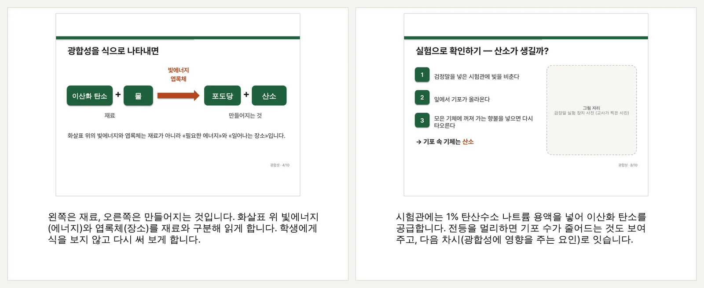

강의자료 PPT 만들기
수업 개요 한 장을 폴더에 넣고, 슬라이드 구성안을 먼저 받아 고친 뒤 발표자 노트가 들어간 파워포인트 파일로 만듭니다.
- 목표
- 수업 개요를 바탕으로 16:9 발표자료 10장을 만들고, 과학 용어와 학생 오개념을 검수한다 (예시: 중학교 2학년 과학 — «광합성» 1차시)
- 준비물
- 예시 파일 광합성_수업개요.docx 를 넣은
클로드연수/2차시폴더 (연수용 가상 자료), 파워포인트 또는 한쇼 - 결과물
- ① 슬라이드 구성안 표 ②
광합성_수업자료.pptx(10장, 발표자 노트) ③ 검수 표 - 주의
2차시폴더만 연결 · 그림은 지어내지 않고 «그림 자리»로 비우기 · 과학 내용은 교사가 마지막으로 확인
채팅에서도 파일을 올려 발표자료를 받을 수 있지만, 코워크는 폴더 안의 수업 개요를 직접 읽고 만든 파워포인트 파일을 같은 폴더에 저장합니다. 발표자료는 한 번에 10장이 나오기 때문에, 다 만든 뒤에 고치면 일이 커집니다. 그래서 핵심은 둘입니다. 파일을 만들기 전에 구성안을 표로 받아 흐름을 고치는 것, 그리고 다 만든 뒤에는 장 번호로 짚어서 그 장만 고치게 하는 것입니다.
먼저 볼 영상

설명란에 따르면 영상은 마크다운 → HTML → PPT 순서로 만듭니다. 이 차시는 구성안 → 파워포인트 파일로 바로 가니, 전체 흐름을 보는 용도로 보세요.
1 준비
클로드연수안에2차시폴더를 만들고, 예시 파일 광합성_수업개요.docx 를 내려받아 넣습니다. 학습 목표·수업 흐름·학생들이 자주 하는 오해가 적힌 한 장짜리 가상 수업 개요입니다.- 내 수업 개요로 해 보려면 워드(docx)·PDF·텍스트 파일로 넣습니다. 한글(hwp·hwpx) 파일이면 한글 프로그램에서 docx나 PDF로 저장해 넣습니다. 클로드 도움말의 «다룰 수 있는 문서 종류» 목록에 한글 파일은 없습니다(4차시에서 자세히).
2 따라 하기
번호 순서대로 진행합니다. 프롬프트가 필요한 단계에는 바로 아래에 복사 단추가 있습니다.
- 클로드 데스크톱 앱에서 새 대화를 엽니다.
새 화면 메시지 상자에 바로 요청합니다. 예전 화면 메시지 상자에서 Cowork 를 먼저 고릅니다. - 메시지 상자에서 내 컴퓨터 폴더를 연결하는 단추를 눌러
클로드연수/2차시폴더를 고릅니다. 단추 이름은 화면 문구를 따릅니다. (1차시와 같은 방법) - 권한 설정을 Manual(수동)로 둡니다. 파일을 만들기 전에 클로드가 묻게 됩니다.
- 구성안만 먼저 받습니다. 아래 프롬프트를 보내면 클로드가 수업 개요를 읽고 10장의 흐름을 표로 보여 줍니다.
연결한 폴더(2차시)에 있는 수업 개요를 읽고, 이 수업에 쓸 발표자료의 슬라이드 구성안만 먼저 보여 주세요. 아직 파워포인트 파일은 만들지 마세요. 조건 - 10장, 16:9 - 한 장에 핵심 하나. 글은 짧게, 긴 문장보다 낱말과 짧은 구절로 - 1장은 표지, 2장은 생각을 여는 질문, 마지막 장은 참고 자료와 그림 출처 - 과학 용어는 중학교 교과서 표기를 따르기 (예: 이산화 탄소, 엽록체) - 수업 개요에 없는 실험 수치·연도·인물은 지어내지 않기 - 사진·그림이 필요한 곳은 «그림 자리»로 비워 두고, 어떤 그림이 들어갈지 적기 (그림을 만들거나 인터넷에서 가져오지 않기) - 글자 크기 기준: 제목 36pt 이상, 본문 24pt 이상 (교실 뒷자리에서도 읽히게) 구성안은 표로 보여 주세요: 장 번호 | 제목 | 핵심 문장 | 그림 자리 | 발표자 노트 요약
«아직 파워포인트 파일은 만들지 마세요»가 핵심입니다. 표 한 장이면 흐름이 한눈에 보이고, 순서를 바꾸거나 장을 빼는 일도 말 한마디로 끝납니다. «그림 자리»로 비워 두게 하면 출처를 알 수 없는 그림이 섞이지 않습니다. 그림은 교사가 직접 찍은 사진이나 이용 조건을 확인한 자료로 채웁니다.
캡처 넣을 곳 · L02-1
슬라이드 구성안 표 (따라 하기 4번).- 프롬프트 1에 대한 답 — 10장의 구성안 표가 보이게
- 빨간 상자: «그림 자리» 열
- 구성안을 읽고 고칠 점은 말로 고칩니다. 예: «7장과 8장 순서를 바꿔 주세요», «5장 핵심 문장을 한 줄로 줄여 주세요», «9장에 O/X 질문을 하나 더 넣어 주세요»
디자인이 걱정되면 10장을 다 만들기 전에 두 장만 샘플로 받아 모양을 정합니다.구성안의 1장(표지)과 4장(광합성 식)만 먼저 파워포인트로 만들어 2차시 폴더에 «샘플_2장.pptx»로 저장해 주세요. - 글꼴, 색, 글자 크기, 그림 자리 모양을 이 두 장으로 정하려고 합니다 - 나머지 장은 아직 만들지 마세요 다 만들면 두 장을 그림으로 바꿔 직접 보고, 글이 넘치거나 겹친 곳이 없는지 알려 주세요.
두 장으로 모양을 먼저 맞추면, 10장을 다 만든 뒤 디자인 때문에 처음부터 다시 만드는 일이 줄어듭니다. 마음에 들면 다음 단계의 프롬프트 2 끝에 «샘플_2장.pptx 와 같은 모양으로»를 덧붙입니다.
- 파워포인트 파일을 만듭니다. 아래 프롬프트를 보내고, 클로드가 허락을 구하면 내용을 보고 승인합니다.
구성안대로 파워포인트 파일을 만들어 2차시 폴더에 «광합성_수업자료.pptx»로 저장해 주세요. - 장마다 발표자 노트에 교사가 할 말을 2~3문장으로 쓰기 - 그림 자리는 점선 상자로 남기고, 상자 안에 들어갈 그림을 적기 - 글꼴은 맑은 고딕, 글자 크기는 구성안의 기준대로 - 마지막 장에 참고한 자료(수업 개요 파일 이름)와, 교사가 그림을 넣은 뒤 출처를 적을 칸 - 다 만들면 장마다 글자 크기 기준을 지켰는지, 글이 상자 밖으로 넘친 곳이 없는지 확인하고 결과를 알려 주기
결과 파일은 대화에서 미리 보고 내려받을 수 있습니다. 저장 위치(
2차시폴더)와 파일 이름을 적어 두면 폴더에도 바로 저장됩니다. 맑은 고딕은 윈도우에 기본으로 들어 있어 학교 PC에서 글꼴이 바뀌지 않습니다. 인터넷에 올리거나 많이 인쇄해 나눠 줄 자료라면 사용 조건이 공개된 무료 글꼴(Pretendard·나눔고딕·학교안심 글꼴 등)을 지정합니다. 글꼴도 저작물이라 글꼴마다 쓸 수 있는 범위가 다릅니다(안전하게 쓰기 5번).캡처 넣을 곳 · L02-2
결과 파일 미리보기와 내려받기 (따라 하기 6번).- 대화에 나온
광합성_수업자료.pptx와 미리보기 화면 - 빨간 상자: 내려받기 단추 (단추 이름은 화면 문구를 따릅니다)
- 대화에 나온
- 파일 탐색기(맥은 Finder)에서
2차시폴더의광합성_수업자료.pptx를 파워포인트로 엽니다. 장 수(10장)와 화면 비율(16:9)을 보고, 화면 아래 노트 창에 발표자 노트가 들어 있는지 확인합니다. 노트 창이 보이지 않으면 보기 탭에서 노트를 켭니다.
학교 PC에 파워포인트가 없으면 한쇼로 엽니다. 글꼴과 줄바꿈이 조금 달라질 수 있으니 장마다 넘친 글이 없는지 봅니다. - 아래 프롬프트로 과학 내용을 검수하게 하고, 고칠 장을 골라 그 장만 고치게 합니다.
만든 발표자료를 중학교 과학 교사의 눈으로 검수해 주세요. 1. 과학 용어가 중학교 교과서 표기와 다른 곳 (이산화 탄소, 엽록체, 엽록소, 기공, 녹말 등) 2. 학생의 오개념을 부를 수 있는 표현 - 빛을 광합성의 재료처럼 쓴 곳 - 식물은 밤에만 호흡한다고 읽힐 수 있는 곳 - 식물이 흙에서 양분을 얻는다고 읽힐 수 있는 곳 3. 광합성 식에서 재료(이산화 탄소, 물)와 만들어지는 것(포도당, 산소)이 바르게 놓였는지 4. 수업 개요에 없는 수치·연도·인물을 지어낸 곳 아직 고치지 말고, 고칠 곳을 표로 먼저 보여 주세요: 장 번호 | 지금 표현 | 문제 | 고칠 표현 제가 고르는 장만 고치겠습니다.
표를 보고 «4장과 9장만 고쳐 주세요», «7장 발표자 노트에 고구마 예시를 넣어 주세요»처럼 장 번호로 짚어 요청합니다. «전체적으로 다듬어 줘»라고 하면 이미 확인한 장까지 바뀝니다. 고친 뒤에는 파워포인트에서 파일을 다시 열어 확인합니다.
- 이번에는 화면을 검수하게 합니다. 내용이 맞아도 글이 넘치거나 겹치면 교실에서 읽히지 않습니다.
만든 발표자료를 장마다 그림으로 바꿔 직접 보고, 화면을 검수해 주세요. 1. 글이 상자나 슬라이드 밖으로 넘친 곳 2. 글, 그림 자리, 도형이 서로 겹친 곳 3. 슬라이드 가장자리에서 1.2cm(약 0.5인치) 안쪽까지 글이 붙어 있는 곳 4. 제목 36pt, 본문 24pt 기준보다 작은 글자 5. 바탕색과 글자색의 대비가 약해 교실 TV에서 읽기 어려운 곳, 색만으로 구별해 둔 곳 6. 글꼴이 섞인 곳 아직 고치지 말고 표로 먼저 보여 주세요: 장 번호 | 문제 | 고칠 방법 제가 고르는 장만 고치겠습니다.
«그림으로 바꿔 직접 보고»를 넣으면 파일 속 글자만 읽지 않고 실제 화면 모양을 확인합니다. 그래도 마지막 확인은 교사가 파워포인트(또는 한쇼)로 열어 합니다.
- 점선 «그림 자리»에 교사가 직접 찍은 사진이나 이용 조건을 확인한 그림을 넣고, 마지막 장에 출처를 적습니다.
3 결과 예시
![광합성 발표자료 10장을 두 줄로 늘어놓은 그림. 1장 표지는 연두색 바탕에 «중학교 2학년 과학 · 식물과 에너지», 큰 제목 «식물은 어떻게 양분을 만들까?», «광합성»이 있고 오른쪽에 점선 상자 «그림 자리 · 햇빛을 받는 잎 사진»이 있다. 2장 «나무의 몸은 어디에서 왔을까?»는 반 헬몬트의 버드나무 실험 이야기, 3장 «광합성이란?»은 식물이 빛에너지를 이용해 이산화 탄소와 물로 포도당을 만들고 산소를 내놓는 과정이라는 정의, 4장은 초록 상자로 «이산화 탄소 + 물 → 포도당 + 산소»를 나타내고 화살표 위에 빛에너지와 엽록체를 적은 식, 5장은 엽록체와 엽록소, 6장은 물은 뿌리에서 물관을 따라, 이산화 탄소는 기공으로 들어온다는 내용, 7장은 포도당이 녹말로 저장되었다가 설탕으로 바뀌어 체관으로 이동하는 네 단계, 8장은 검정말 실험 세 단계와 «기포 속 기체는 산소», 9장은 «맞을까, 틀릴까?» O/X 세 문항, 10장은 참고 자료와 그림 출처이다. 그림이 필요한 장마다 점선 «그림 자리» 상자가 있다.](assets/img/l02-slides.webp)

4 검증 포인트
② 광합성 식 — 재료는 이산화 탄소와 물, 만들어지는 것은 포도당과 산소입니다. 빛에너지와 엽록체가 재료 쪽에 «+»로 붙어 있으면 틀린 것입니다.
③ 오개념을 부르는 표현 — «빛을 먹고 자란다», «밤에는 호흡, 낮에는 광합성»처럼 학생 오해를 굳히는 문장이 없는지 봅니다. 식물은 낮과 밤 언제나 호흡합니다.
④ 지어낸 내용 — 수업 개요에 없는 실험 수치, 연도, 사람 이름이 들어갔는지 봅니다. 들어갔다면 출처를 확인하거나 뺍니다.
⑤ 그림과 출처 — 그림 자리가 비어 있는지, 클로드가 어디선가 그림을 가져왔다면 출처와 이용 조건을 확인합니다. 마지막 장의 출처 칸을 채웁니다.
⑥ 발표자 노트 — 모든 장에 노트가 있는지, 노트 내용이 그 장과 맞는지 두세 장을 골라 읽어 봅니다.
⑦ 교실 화면 — 교실 TV에 띄워 뒷자리에서 본문이 읽히는지, 글이 상자 밖으로 넘친 장이 없는지 봅니다.
⑧ 한쇼에서 열 때 — 학교 PC의 한쇼로 열면 글꼴·줄바꿈이 달라질 수 있습니다. 수업 전에 쓸 PC에서 한 번 열어 봅니다.
⑨ 글꼴 — 프롬프트에서 정한 글꼴만 쓰였는지 봅니다. 파일을 인터넷에 올리거나 글꼴 파일을 함께 나눠 줄 때는 그 글꼴의 사용 조건을 확인합니다.
5 다른 교과에 적용하기
따라 하기 4단계 프롬프트 대신 아래 교과 프롬프트를 씁니다. 교과마다 «검수할 때 볼 것»을 넣어 두었으니, 6단계와 8단계는 아래 공통 프롬프트로 바꿔 씁니다. 수업 개요 파일은 각 교과 선생님이 직접 쓴 것을 차시 폴더에 넣습니다. 교과를 눌러 펼친 뒤 복사합니다.
구성안대로 파워포인트 파일을 만들어 연결한 폴더에 저장해 주세요. 파일 이름은 «[주제]_수업자료.pptx»로 해 주세요. - 장마다 발표자 노트에 교사가 할 말을 2~3문장으로 쓰기 - 그림 자리는 점선 상자로 남기고, 상자 안에 들어갈 그림을 적기 - 글꼴은 맑은 고딕, 글자 크기는 구성안의 기준대로 - 마지막 장에 참고한 자료와, 교사가 그림을 넣은 뒤 출처를 적을 칸 - 다 만들면 장마다 글자 크기 기준을 지켰는지, 글이 상자 밖으로 넘친 곳이 없는지 확인하고 결과를 알려 주기
만든 발표자료를 이 교과 교사의 눈으로 검수해 주세요. 1. 구성안의 «검수할 때 볼 것»을 하나씩 점검 2. 교과서 용어·표기와 다른 곳 3. 학생이 오해할 만한 문장이나 그림 자리 설명 4. 수업 개요에 없는 수치·연도·인물·인용문을 지어낸 곳 아직 고치지 말고, 고칠 곳을 표로 먼저 보여 주세요: 장 번호 | 지금 표현 | 문제 | 고칠 표현 제가 고르는 장만 고치겠습니다.
국어비유와 상징개념 → 예문 → 직접 찾아보기, 예문은 교사가 쓴 문장만
연결한 폴더의 수업 개요를 읽고, 중학교 국어 «비유와 상징» 수업에 쓸 발표자료의 슬라이드 구성안만 먼저 보여 주세요. 아직 파워포인트 파일은 만들지 마세요. 조건 - 8장, 16:9. 한 장에 핵심 하나, 글은 짧게 - 직유·은유·의인·상징을 한 장에 하나씩, 장마다 예문 하나와 «무엇을 무엇에 빗댔는지» - 예문은 수업 개요에 있는 문장이나 교사가 쓴 문장만 쓰기 (최근 작가의 시·노랫말을 옮기지 않기) - 마지막 앞 장은 학생이 직접 비유를 찾아보는 활동 - 그림이 필요한 곳은 «그림 자리»로 비우고 들어갈 그림을 적기 - 글자 크기: 제목 36pt 이상, 본문 24pt 이상 - 마지막 장은 참고 자료와 그림 출처 검수할 때 볼 것 - 직유(«~처럼», «~같이»)와 은유의 예가 서로 뒤바뀌지 않았는지 - 예문의 출처가 분명한지 구성안은 표로 보여 주세요: 장 번호 | 제목 | 핵심 문장 | 그림 자리 | 발표자 노트 요약
수학일차함수의 그래프풀이는 한 장에 한 단계, 예시 계산값은 모두 검산
연결한 폴더의 수업 개요를 읽고, 중학교 수학 «일차함수의 그래프» 수업에 쓸 발표자료의 슬라이드 구성안만 먼저 보여 주세요. 아직 파워포인트 파일은 만들지 마세요. 조건 - 10장, 16:9. 한 장에 핵심 하나 - 예제 풀이는 한 장에 한 단계씩 (표 만들기 → 점 찍기 → 직선 긋기) - 식은 그림이 아닌 글자로 쓰기 (예: y = 2x − 1) - 좌표평면은 «그림 자리»로 비우고, 어떤 점과 직선이 들어갈지 좌표로 적기 - 마지막 앞 장은 학생이 풀어 볼 문제 2개와 정답 - 글자 크기: 제목 36pt 이상, 본문 24pt 이상 - 마지막 장은 참고 자료와 그림 출처 검수할 때 볼 것 - 예제와 문제의 계산값을 모두 직접 대입해 검산 - 기울기·y절편 같은 용어가 교과서 표기와 같은지 구성안은 표로 보여 주세요: 장 번호 | 제목 | 핵심 문장 | 그림 자리 | 발표자 노트 요약
영어과거 시제규칙·불규칙 동사, 예문마다 우리말 뜻
연결한 폴더의 수업 개요를 읽고, 중학교 영어 «과거 시제» 수업에 쓸 발표자료의 슬라이드 구성안만 먼저 보여 주세요. 아직 파워포인트 파일은 만들지 마세요. 조건 - 8장, 16:9. 한 장에 핵심 하나 - 규칙 동사(-ed)와 불규칙 동사를 나누어, 예문마다 우리말 뜻을 함께 - 예문은 중학생 수준의 쉬운 낱말로, 수업 개요의 단원 낱말을 우선 쓰기 - 마지막 앞 장은 짝과 묻고 답하는 말하기 활동 (Did you ...? / Yes, I did.) - 그림이 필요한 곳은 «그림 자리»로 비우고 들어갈 그림을 적기 - 글자 크기: 제목 36pt 이상, 본문 24pt 이상 - 마지막 장은 참고 자료와 그림 출처 검수할 때 볼 것 - 불규칙 동사의 과거형 철자 - 우리말 뜻이 예문과 맞는지, 문법 용어가 교과서 표기와 같은지 구성안은 표로 보여 주세요: 장 번호 | 제목 | 핵심 문장 | 그림 자리 | 발표자 노트 요약
과학지진규모와 진도 구분, 대피 요령 한 장
연결한 폴더의 수업 개요를 읽고, 중학교 과학 «지진» 수업에 쓸 발표자료의 슬라이드 구성안만 먼저 보여 주세요. 아직 파워포인트 파일은 만들지 마세요. 조건 - 10장, 16:9. 한 장에 핵심 하나 - 지진이 생기는 까닭, 규모와 진도의 차이, 지진대 분포, 대피 요령 순서 - 지진 통계·사례는 수업 개요에 있는 것만 쓰고, 연도와 출처를 함께 적기 - 지도와 사진은 «그림 자리»로 비우고 들어갈 그림을 적기 - 대피 요령은 행정안전부 등 공공기관 안내를 교사가 확인해 넣는다고 발표자 노트에 적기 - 글자 크기: 제목 36pt 이상, 본문 24pt 이상 - 마지막 장은 참고 자료와 그림 출처 검수할 때 볼 것 - 규모(지진이 가진 에너지)와 진도(어느 곳에서 느낀 흔들림·피해 정도)를 뒤섞어 쓴 곳 - 수업 개요에 없는 숫자 구성안은 표로 보여 주세요: 장 번호 | 제목 | 핵심 문장 | 그림 자리 | 발표자 노트 요약
사회인구 분포통계는 수업 개요의 숫자만, 장마다 기준 연도
연결한 폴더의 수업 개요를 읽고, 중학교 사회 «인구 분포» 수업에 쓸 발표자료의 슬라이드 구성안만 먼저 보여 주세요. 아직 파워포인트 파일은 만들지 마세요. 조건 - 10장, 16:9. 한 장에 핵심 하나 - 인구 분포에 영향을 주는 자연적 요인과 사회·경제적 요인을 나누기 - 통계 숫자는 수업 개요에 있는 것만 쓰고, 장마다 기준 연도와 출처 기관을 적기 - 지도·그래프는 «그림 자리»로 비우고, 어떤 자료가 들어갈지 적기 - 마지막 앞 장은 우리 지역 인구를 생각해 보는 질문 - 글자 크기: 제목 36pt 이상, 본문 24pt 이상 - 마지막 장은 참고 자료와 그림 출처 검수할 때 볼 것 - 기준 연도와 출처가 빠진 숫자 - 특정 지역을 낮춰 보는 표현 구성안은 표로 보여 주세요: 장 번호 | 제목 | 핵심 문장 | 그림 자리 | 발표자 노트 요약
역사조선의 건국사건 순서대로, 연도·인물은 수업 개요 기준
연결한 폴더의 수업 개요를 읽고, 중학교 역사 «조선의 건국» 수업에 쓸 발표자료의 슬라이드 구성안만 먼저 보여 주세요. 아직 파워포인트 파일은 만들지 마세요. 조건 - 10장, 16:9. 한 장에 핵심 하나 - 사건이 일어난 순서대로 배치하고, 장마다 연도를 제목 옆에 적기 - 연도·인물·사건은 수업 개요에 있는 것만 쓰고, 수업 개요에 없는 것은 «확인 필요»로 표시 - 지도·사료 사진은 «그림 자리»로 비우고 들어갈 자료를 적기 - 마지막 앞 장은 사건 순서 맞히기 활동 - 글자 크기: 제목 36pt 이상, 본문 24pt 이상 - 마지막 장은 참고 자료와 그림 출처 검수할 때 볼 것 - 연도와 사건 순서가 수업 개요와 같은지 - 한 인물을 영웅이나 악인으로만 그린 표현 구성안은 표로 보여 주세요: 장 번호 | 제목 | 핵심 문장 | 그림 자리 | 발표자 노트 요약
도덕평화로운 갈등 해결상황 → 여러 관점 → 해결 방법, 정답을 정하지 않기
연결한 폴더의 수업 개요를 읽고, 중학교 도덕 «평화로운 갈등 해결» 수업에 쓸 발표자료의 슬라이드 구성안만 먼저 보여 주세요. 아직 파워포인트 파일은 만들지 마세요. 조건 - 8장, 16:9. 한 장에 핵심 하나 - 학교생활의 갈등 상황 하나 → 서로의 입장 → 해결 방법(대화·양보·중재) → 내 경험 돌아보기 - 상황은 수업 개요에 있는 것만 쓰고, 실제 학생이 떠오를 이름·사건은 넣지 않기 - 한쪽 입장만 옳다고 정하지 말고, 생각할 질문으로 끝내기 - 그림이 필요한 곳은 «그림 자리»로 비우고 들어갈 그림을 적기 - 글자 크기: 제목 36pt 이상, 본문 24pt 이상 - 마지막 장은 참고 자료와 그림 출처 검수할 때 볼 것 - 특정 학생이나 집단을 탓하는 표현 - 해결 방법이 한 가지 정답처럼 쓰인 곳 구성안은 표로 보여 주세요: 장 번호 | 제목 | 핵심 문장 | 그림 자리 | 발표자 노트 요약
기술·가정청소년의 영양과 식사영양소별 한 장, 상품 이름 넣지 않기
연결한 폴더의 수업 개요를 읽고, 중학교 기술·가정 «청소년의 영양과 식사» 수업에 쓸 발표자료의 슬라이드 구성안만 먼저 보여 주세요. 아직 파워포인트 파일은 만들지 마세요. 조건 - 10장, 16:9. 한 장에 핵심 하나 - 영양소마다 한 장: 하는 일과 많이 든 식품 - 하루 권장량 같은 숫자는 수업 개요에 있는 것만 쓰고 출처를 적기 - 특정 상품·회사 이름은 넣지 않기 - 마지막 앞 장은 내 하루 식사를 점검해 보는 활동 - 사진은 «그림 자리»로 비우고 들어갈 사진을 적기 - 글자 크기: 제목 36pt 이상, 본문 24pt 이상 - 마지막 장은 참고 자료와 그림 출처 검수할 때 볼 것 - 영양소 이름과 하는 일이 교과서와 같은지 - 몸매·외모를 평가하는 표현 구성안은 표로 보여 주세요: 장 번호 | 제목 | 핵심 문장 | 그림 자리 | 발표자 노트 요약
정보순차·선택·반복 구조생활 예시 → 순서도 → 짧은 코드, 코드는 고정폭 글꼴
연결한 폴더의 수업 개요를 읽고, 중학교 정보 «순차·선택·반복 구조» 수업에 쓸 발표자료의 슬라이드 구성안만 먼저 보여 주세요. 아직 파워포인트 파일은 만들지 마세요. 조건 - 10장, 16:9. 한 장에 핵심 하나 - 구조마다 생활 예시 → 순서도 → 짧은 파이썬 코드 순서 - 코드는 5줄 이하, 고정폭 글꼴(예: Consolas)로, 실행 결과를 함께 적기 - 순서도는 «그림 자리»로 비우고 들어갈 도형과 순서를 적기 - 마지막 앞 장은 코드의 실행 결과를 예측해 보는 문제 2개 - 글자 크기: 제목 36pt 이상, 본문 24pt 이상 (코드는 20pt 이상) - 마지막 장은 참고 자료와 그림 출처 검수할 때 볼 것 - 코드를 실제로 실행해 적어 둔 실행 결과와 같은지 - 들여쓰기가 슬라이드에서 깨지지 않았는지 구성안은 표로 보여 주세요: 장 번호 | 제목 | 핵심 문장 | 그림 자리 | 발표자 노트 요약
음악국악의 장단장단마다 한 장, 장단표와 음원은 그림·소리 자리로
연결한 폴더의 수업 개요를 읽고, 중학교 음악 «국악의 장단» 수업에 쓸 발표자료의 슬라이드 구성안만 먼저 보여 주세요. 아직 파워포인트 파일은 만들지 마세요. 조건 - 8장, 16:9. 한 장에 핵심 하나 - 수업 개요에 나온 장단만 한 장에 하나씩: 빠르기, 느낌, 이 장단을 쓰는 곡 - 장단표(구음·장구 부호)는 «그림 자리»로 비우고, 교사가 교과서에서 확인해 넣는다고 적기 - 음원은 «소리 자리»로 두고 곡 이름만 적기 (음원 파일을 가져오지 않기) - 마지막 앞 장은 장단에 맞춰 손뼉 치기 활동 - 글자 크기: 제목 36pt 이상, 본문 24pt 이상 - 마지막 장은 참고 자료와 그림·음원 출처 검수할 때 볼 것 - 장단 이름과 박 수가 교과서와 같은지 - 곡과 장단의 짝이 맞는지 구성안은 표로 보여 주세요: 장 번호 | 제목 | 핵심 문장 | 그림 자리 | 발표자 노트 요약
미술작품 감상의 방법묘사 → 분석 → 해석 → 판단, 작품 그림은 출처 확인 뒤
연결한 폴더의 수업 개요를 읽고, 중학교 미술 «작품 감상의 방법» 수업에 쓸 발표자료의 슬라이드 구성안만 먼저 보여 주세요. 아직 파워포인트 파일은 만들지 마세요. 조건 - 8장, 16:9. 한 장에 핵심 하나 - 감상 단계(묘사 → 분석 → 해석 → 판단)를 한 장에 하나씩, 장마다 학생에게 던질 질문 하나 - 작품 이미지는 «그림 자리»로 비우고, 수업 개요에 적은 작품 이름만 적기 - 작품을 넣을 때는 저작권이 끝났거나 미술관이 이용을 허락한 이미지만 쓴다고 발표자 노트에 적기 - 마지막 앞 장은 모둠 감상 활동 - 글자 크기: 제목 36pt 이상, 본문 24pt 이상 - 마지막 장은 참고 자료와 그림 출처 검수할 때 볼 것 - 작가 이름·제작 연도가 수업 개요와 같은지 - 한 가지 해석만 정답처럼 쓴 곳 구성안은 표로 보여 주세요: 장 번호 | 제목 | 핵심 문장 | 그림 자리 | 발표자 노트 요약
체육배드민턴 기본 기술기술마다 동작 순서 3단계, 안전 수칙 먼저
연결한 폴더의 수업 개요를 읽고, 중학교 체육 «배드민턴 기본 기술» 수업에 쓸 발표자료의 슬라이드 구성안만 먼저 보여 주세요. 아직 파워포인트 파일은 만들지 마세요. 조건 - 8장, 16:9. 한 장에 핵심 하나 - 2장은 안전 수칙(준비 운동, 라켓 휘두르는 거리) - 기술마다 한 장: 동작 순서 3단계와 자주 하는 실수 하나 - 동작 사진은 «그림 자리»로 비우고, 어떤 자세가 들어갈지 적기 (학생 얼굴이 나온 사진은 쓰지 않는다고 적기) - 마지막 앞 장은 짝 연습 방법 - 글자 크기: 제목 36pt 이상, 본문 24pt 이상 - 마지막 장은 참고 자료와 그림 출처 검수할 때 볼 것 - 기술 이름과 경기 규칙 용어가 교과서와 같은지 - 안전 수칙이 빠지지 않았는지 구성안은 표로 보여 주세요: 장 번호 | 제목 | 핵심 문장 | 그림 자리 | 발표자 노트 요약
진로직업 세계의 변화전망 숫자는 출처 있는 것만, 마지막은 나의 관심 직업
연결한 폴더의 수업 개요를 읽고, 중학교 진로 «직업 세계의 변화» 수업에 쓸 발표자료의 슬라이드 구성안만 먼저 보여 주세요. 아직 파워포인트 파일은 만들지 마세요. 조건 - 8장, 16:9. 한 장에 핵심 하나 - 사라지는 일, 바뀌는 일, 새로 생기는 일을 나누어 예시 하나씩 - 직업 전망 숫자는 수업 개요에 있는 것만 쓰고 출처와 연도를 적기 - 특정 직업을 낮춰 보는 표현을 쓰지 않기 - 마지막 앞 장은 나의 관심 직업이 어떻게 바뀔지 적어 보는 활동 - 그림이 필요한 곳은 «그림 자리»로 비우고 들어갈 그림을 적기 - 글자 크기: 제목 36pt 이상, 본문 24pt 이상 - 마지막 장은 참고 자료와 그림 출처 검수할 때 볼 것 - 출처 없는 전망 숫자 - 성별에 따라 직업을 나누는 표현 구성안은 표로 보여 주세요: 장 번호 | 제목 | 핵심 문장 | 그림 자리 | 발표자 노트 요약
담임학부모 총회 학급 소개학급 운영 방침·연간 일정, 학생 개인정보 넣지 않기
연결한 폴더의 학급 운영 계획을 읽고, 학부모 총회에서 쓸 학급 소개 발표자료의 슬라이드 구성안만 먼저 보여 주세요. 아직 파워포인트 파일은 만들지 마세요. 조건 - 8장, 16:9. 한 장에 핵심 하나 - 인사 → 학급 운영 방침 → 하루 생활 → 연간 주요 일정 → 가정과 함께할 일 → 연락 방법 순서 - 일정·규칙은 운영 계획 파일에 있는 것만 쓰고, 날짜가 없는 것은 «날짜 확인 필요»로 표시 - 학생 이름·사진·성적 같은 개인정보는 넣지 않기 - 사진은 «그림 자리»로 비우고 들어갈 사진을 적기 - 글자 크기: 제목 36pt 이상, 본문 24pt 이상 (강당 뒷자리 기준) - 마지막 장은 참고 자료와 그림 출처 검수할 때 볼 것 - 운영 계획 파일과 다른 날짜·규칙 - 교사 개인 연락처가 들어갔는지 구성안은 표로 보여 주세요: 장 번호 | 제목 | 핵심 문장 | 그림 자리 | 발표자 노트 요약
발표자료는 한 번에 여러 장이 나오므로 구성안(표)에서 흐름을 먼저 고치고, 파일을 만든 뒤에는 장 번호로 짚어 그 장만 고칩니다. 그림은 «그림 자리»로 비워 출처를 알 수 없는 자료가 섞이지 않게 하고, 교과 내용이 맞는지는 교사가 마지막으로 확인합니다.
· 폴더에 파일이 보이지 않는다 — 대화에 나온 결과 파일을 눌러 미리 보고 내려받습니다. «광합성_수업자료.pptx 를 어디에 저장했는지 알려 주세요»라고 물어도 됩니다.
· 파워포인트가 없다 — 학교 PC의 한쇼로 엽니다. 글꼴·배치가 조금 달라질 수 있습니다.
· 글이 상자 밖으로 넘친다 — «5장 본문이 상자를 넘칩니다. 문장을 줄여 주세요»처럼 장 번호를 짚어 요청합니다.
· 수업 개요가 한글(hwp) 파일이다 — 한글 프로그램에서 docx나 PDF로 저장해 폴더에 넣습니다.
· 학교 양식(템플릿)에 맞추고 싶다 — 학교 발표자료 양식 pptx 를 폴더에 함께 넣고 «이 파일의 디자인을 따라 주세요»라고 요청해 봅니다.
· 매번 디자인이 다르게 나온다 — 마음에 든 조건(글꼴·색·글자 크기·장 구성)을 파일로 남겨 두고 다음에 보여 줍니다. 이 일을 클로드가 알아서 하게 만드는 것이 12차시의 스킬입니다.
더 보기

출처: Claude 도움말 Get started with Claude Cowork (결과 파일을 대화에서 미리 보고 내려받기, 데스크톱에서 내 컴퓨터 파일 읽고 쓰기, 파워포인트 발표자료 만들기) · Create and edit files with Claude (만들 수 있는 파일: xlsx·pptx·docx·PDF) · Upload files to Claude (다룰 수 있는 문서 종류) (2026-11-11 확인)